Refonte de la page Details de transport
B2B SaaS - Logistique ferroviaire - Discovery Discipline
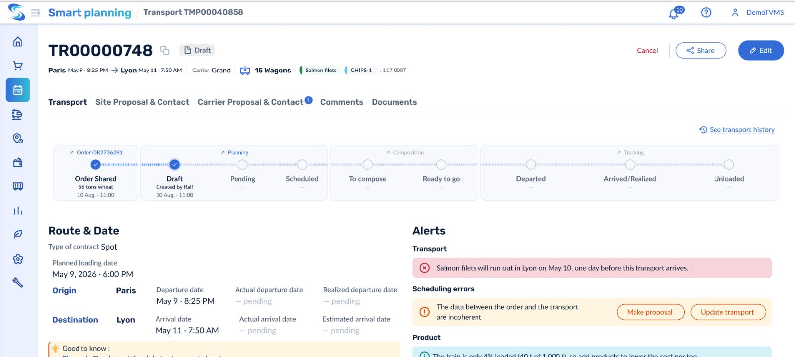
Everysens
Everysens est un TMS ferroviaire utilisé par des opérateurs logistiques qui gèrent des centaines de transports fret chaque jour. La page détail transport est un point de contact critique, pourtant, les utilisateurs s'y bloquaient, s'y perdaient, et perdaient confiance dans les données affichées.
Contexte
Dans le cadre de mon CDD chez Everysens, on m'a confié dès mon arrivée la refonte de la page Détails du Transport, une page centrale du TMS utilisée quotidiennement par les opérateurs logistiques. L'objectif : repenser entièrement l'UX tout en intégrant le nouveau design system.
Problématique
Comment redesigner la page Transport Details pour que les Logistics Operators et les responsables transport puissent lire, modifier et valider un transport de façon autonome, sans ambiguïté sur les champs, les statuts et les alertes — réduisant ainsi les erreurs de saisie, les blocages inexpliqués et la dépendance au support ?
Role
Product designer
Tools
-
Figma/Figjam
-
Google meeting
-
Confluence
-
Google doc
Team
Seule
Timeline
En cours
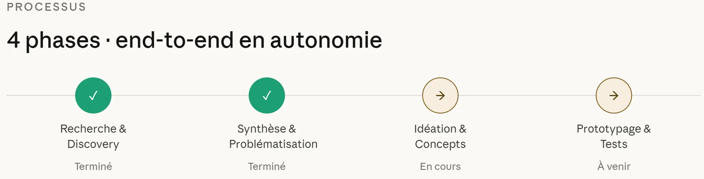
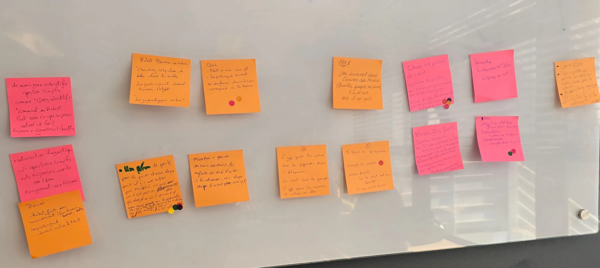
Atelier Brainwriting + Dot-voting : Choisir les hypothèses
Hypothèses
H1 — Les utilisateurs peinent à remplir le formulaire parce que les labels des champs sont ambigus ou trop techniques.
H2 — Les utilisateurs ne distinguent pas les champs les plus importants des optionnels parce qu'il n'existe pas de hiérarchie visuelle claire.
H3 — Les utilisateurs ignorent quelles alertes bloquent leur progression parce que tous les niveaux d'erreur ont le même poids visuel.
H4 — Les utilisateurs sont dépassés parce que l'interface présente trop d'informations simultanément sans hiérarchie ni regroupement logique.
H5 — Les utilisateurs ne comprennent pas les différents états du transport parce qu'ils ne sont pas différenciés visuellement de façon cohérente et il y’en a beaucoup, et on ne voit pas tous les états dès le début.
H6 — Les utilisateurs ont du mal à comprendre l'historique parce que la structure et la typographie ne permettent pas un scan rapide, ce qui provoque une perte de temps et une méfiance envers les données affichées.
First Use Case
Je suis Logistics Operator, et lorsque j'ouvre la page Transport Details pour consulter les informations du transport planifié, et le faire progresser dans le workflow, ce qui compte le plus pour moi c'est de comprendre immédiatement les informations, voir s'il y a un problème, le résoudre, ensuite valider le transport.
Mais, l'interface m'affiche une densité d'informations sans hiérarchie claire, des alertes dont je ne sais pas si elles bloquent ma validation, des statuts dont je ne comprends pas la progression, et un bouton Valider parfois grisé sans aucune explication.
Je dois donc contacter le support pour débloquer une situation que je devrais pouvoir résoudre seule.
Recherche & Discovery
Audit
Les heuristiques de Nielsen
Évaluation heuristique de la page existante selon les 13 heuristiques de Nielsen, problèmes identifiés, classés par sévérité et accompagnés de recommandations.
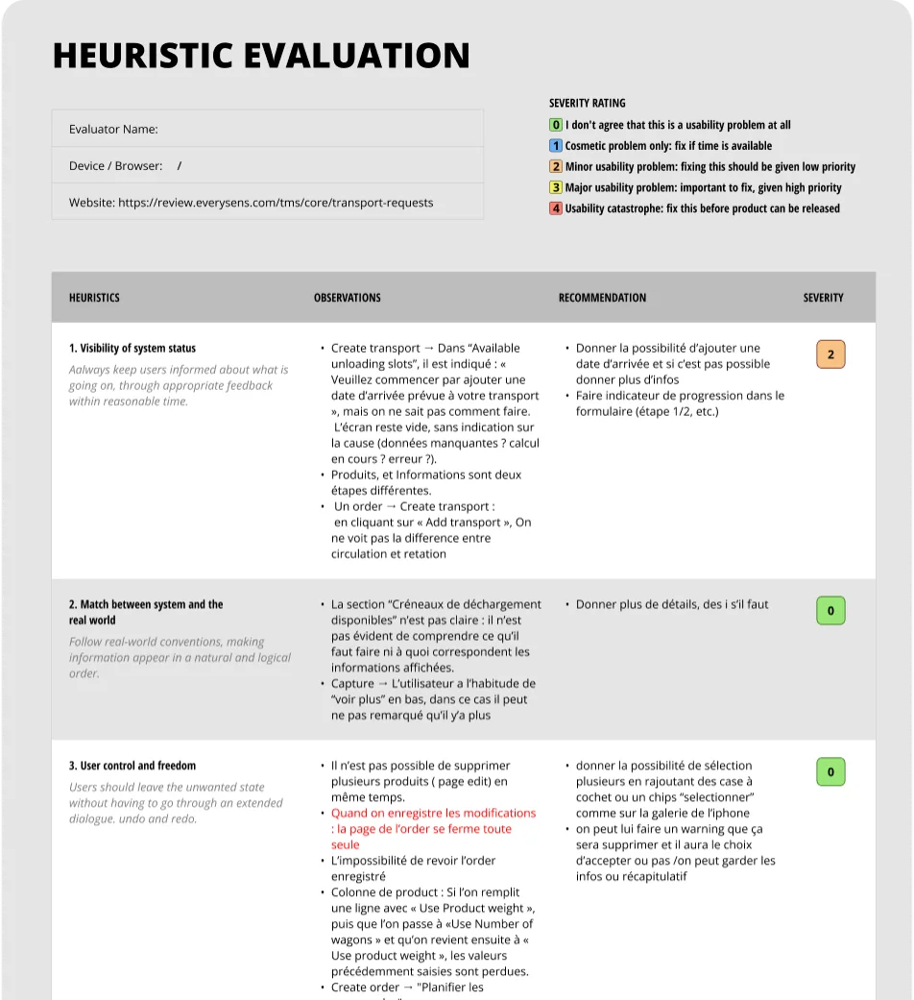
Qualitatif
5 Interviews
"Faire des entretiens afin d'affirmer ou réfuter des hypothèses pour comprendre les utilisateurs."
-
5 entretiens de 45 à 90 minutes, en ligne (Google Meet) et en présentiel.
-
Profils choisis pour leur proximité avec les utilisateurs finaux : support, formation, terrain et produit, afin de trianguler les observations.
-
Questions centrées sur les comportements observés, pas sur les opinions sur l'interface.
Après les entretiens, les 6 hypothèses ont été validées✅
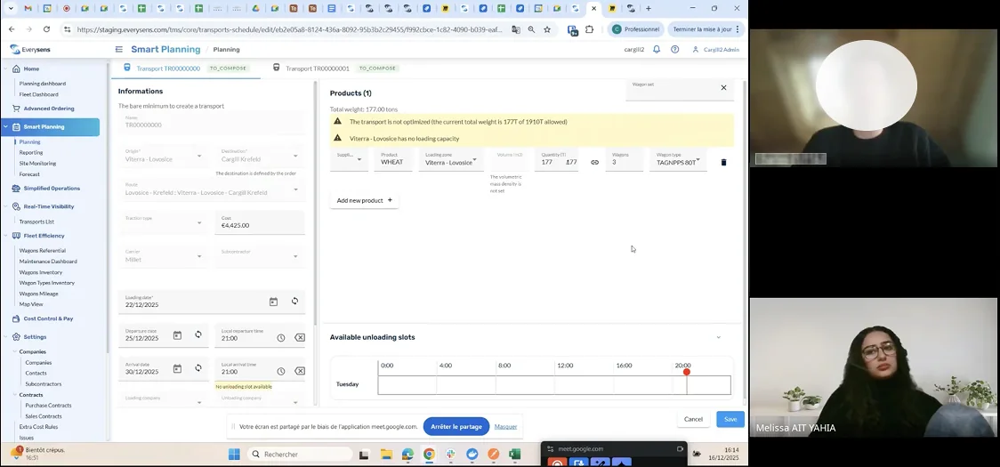
5 insights clés
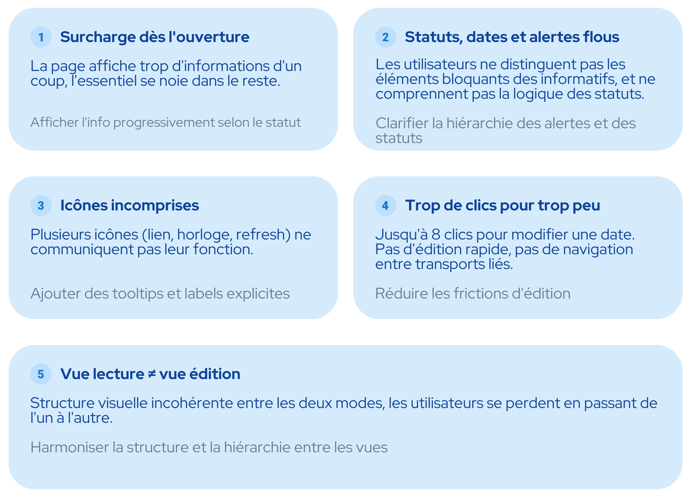
Verbatims
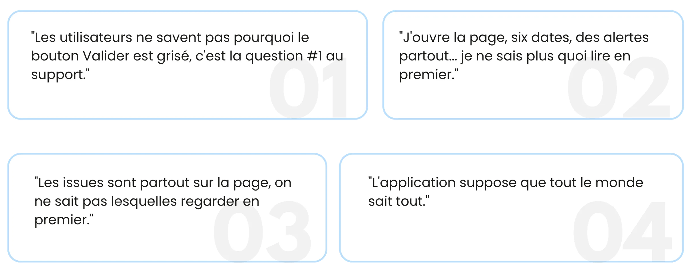
👤Persona
Nous souhaitions mieux comprendre les objectifs, les besoins, les expériences et les comportements de nos utilisateurs. Nous avons donc créé des profils pour nos segments d'utilisateurs, basés sur des entretiens et des enquêtes.
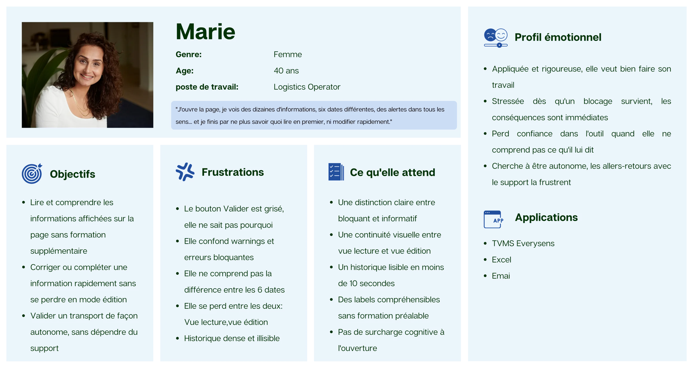
Le parcours de Marie
Nous avons défini notre parcours utilisateur afin de mieux comprendre nos utilisateurs.
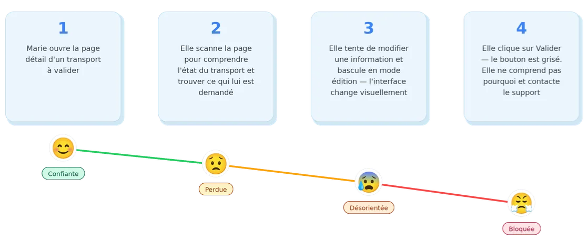
Concept
La vision de la solution
Transformer la page Détails du Transport en un espace clair et sans ambiguïté, où lire, comprendre et agir ne demande aucun effort.
Traduit en 4 directives :
-
Réduction de la charge cognitive : hiérarchiser l'information pour que l'essentiel soit toujours visible en premier
-
Hiérarchie des alertes : bloquant vs informatif, visuellement distincts
-
Actions séparées des états de statut: ne jamais mélanger les deux
-
Historique scannable : lisible en moins de 10 secondes
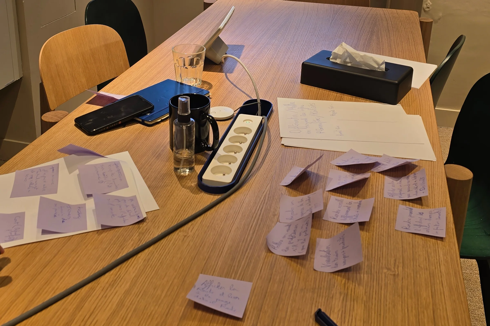
Crazy 8 – Atelier d'idéation
-
Animation d'un atelier Crazy 8 avec 5 participants.
-
Objectif : générer rapidement des pistes de refonte pour la page Transport Details.
-
Production de 8 concepts par participant en 8 minutes.
-
Exploration de plus de 40 idées pour repenser l'expérience utilisateur.
-
Sélection des concepts les plus prometteurs grâce à une session de Dot Voting.
La solution
J’ai transformé la page Détails du transport en un espace clair, où lire, comprendre et agir ne demande aucun effort.
Voici la V2, qui intègre les retours des tests de la première version.
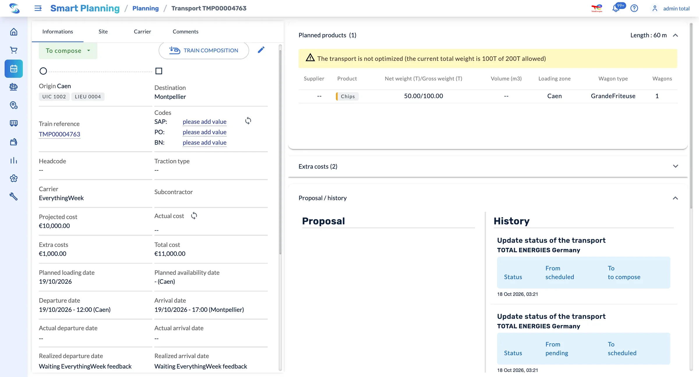
Avant : trop d’informations, aucun regroupement
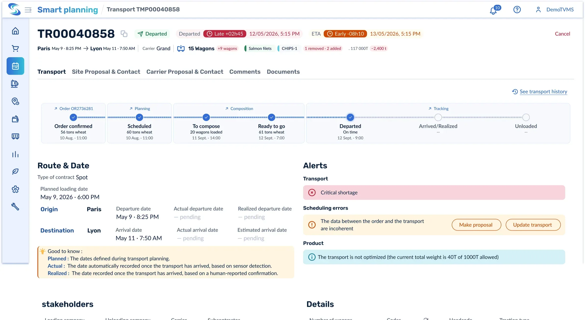
Après : un bandeau résume le transport (trajet, dates, transporteur, produits), puis des sections claires.
Identifier les informations importantes de transport en une seconde
Avant : trop d’informations, aucun regroupement.
Après : un bandeau résume le transport (trajet, dates, transporteur, produits), puis des sections claires.
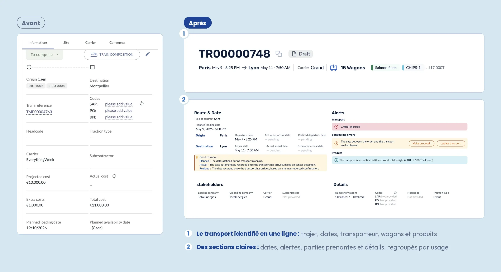
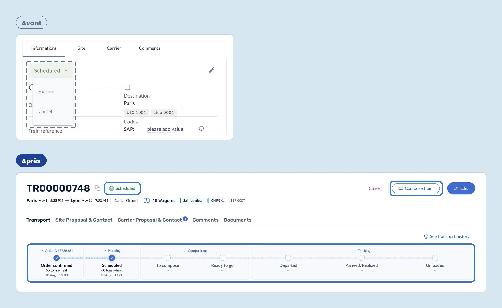
Voir où en est le transport
Avant : le statut et les actions partageaient le même bouton déroulant, et les étapes suivantes restaient invisibles.
Après : le statut est affiché à côté de la référence, les actions ont leurs propres CTA, et un stepper en 4 modules montre tout le parcours, avec les dates et des liens vers chaque étape.
Comprendre les dates
Avant : huit champs de dates empilés, sans lien avec les lieux, que les utilisateurs confondaient.
Après : les dates sont rattachées à l’origine et à la destination, et une légende explique la différence entre date prévue, réelle et réalisée.
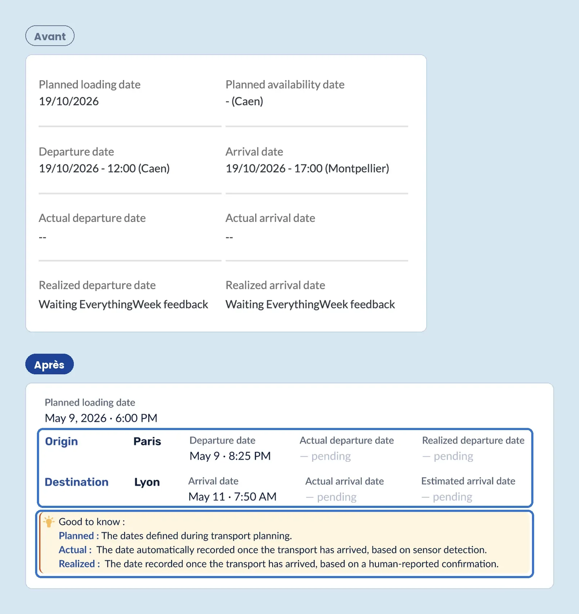
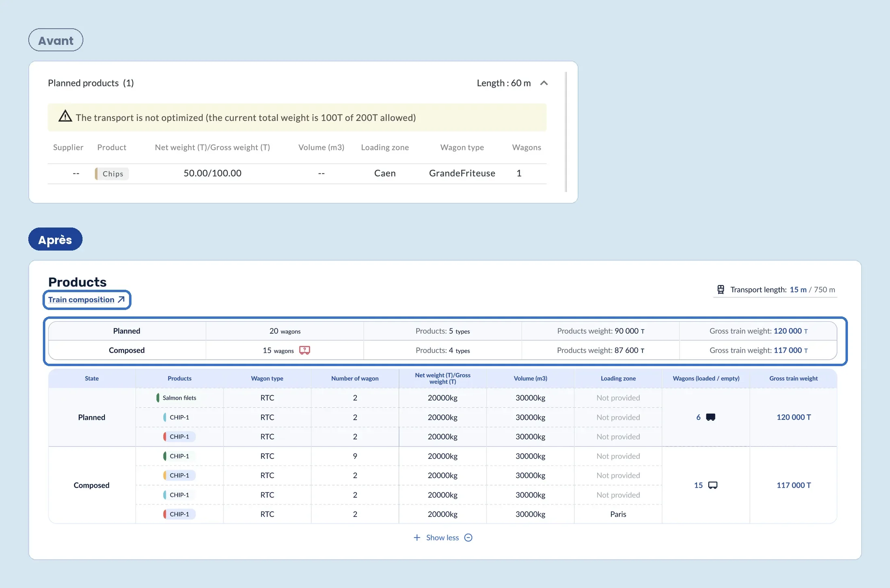
Produit : comparer le prévu et le réel
Avant : seuls les produits prévus étaient affichés, sans moyen de vérifier ce qui avait réellement été chargé.
Après : une synthèse compare en un coup d’œil le prévu et le composé (wagons,
produits, poids), avec un accès direct à la composition du train.
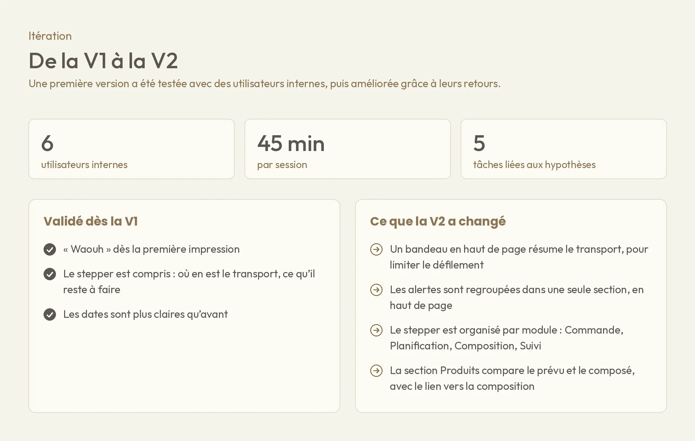